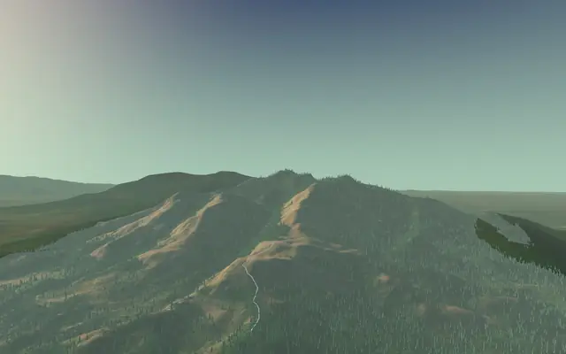

23 treks
Treks graded Easy or Easy–moderate in their sources, shortest first.

Chembraചെമ്പ്ര
Western Ghats · Wayanad

Triundत्रिउंड
Himachal · Kangra

Prashar Lakeपराशर झील
Himachal · Mandi

Kalsubaiकळसूबाई
Western Ghats · Ahilyanagar

Harishchandragadहरिश्चंद्रगड
Western Ghats · Ahilyanagar

Rajmachiराजमाची
Western Ghats · Pune

David Scott Trail
Northeast · East Khasi Hills

Beas Kundब्यास कुंड
Himachal · Kullu

Kareri Lakeकरेरी झील
Himachal · Kangra

Sandhan Valleyसांदण दरी
Western Ghats · Ahilyanagar

Bhrigu Lakeभृगु झील
Himachal · Kullu

Dayara Bugyalदयारा बुग्याल
Uttarakhand · Uttarkashi

Ali–Bedni Bugyalआली–बेदिनी बुग्याल
Uttarakhand · Chamoli

Phulara Ridgeफुलारा रिज
Uttarakhand · Uttarkashi

Har Ki Dunहर की दून
Uttarakhand · Uttarkashi

Kheergangaखीरगंगा
Himachal · Kullu

Rajgad to Tornaराजगड – तोरणा
Western Ghats · Pune

Tadiandamolತಡಿಯಾಂಡಮೋಳ್
Western Ghats · Kodagu

Madmaheshwarमदमहेश्वर
Uttarakhand · Rudraprayag

Kedarkanthaकेदारकांठा
Uttarakhand · Uttarkashi

Brahmatalब्रह्मताल
Uttarakhand · Chamoli

Kolahoi Glacierकोलाहोई ग्लेशियर
Kashmir & Ladakh · Anantnag

Panchachuli Baseपंचाचूली बेस कैंप
Uttarakhand · Pithoragarh